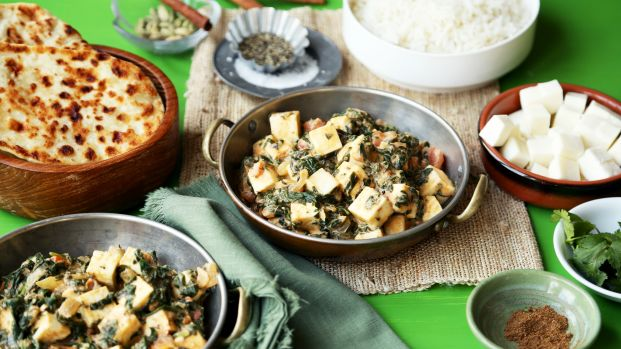
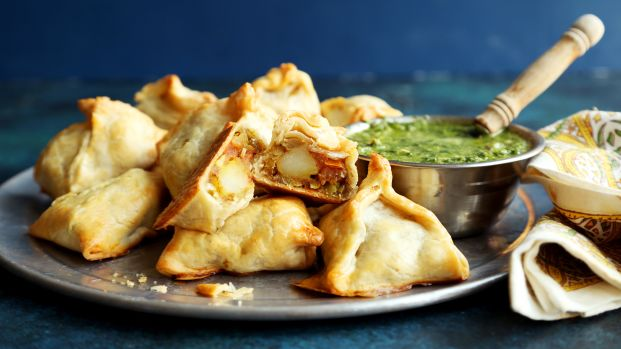
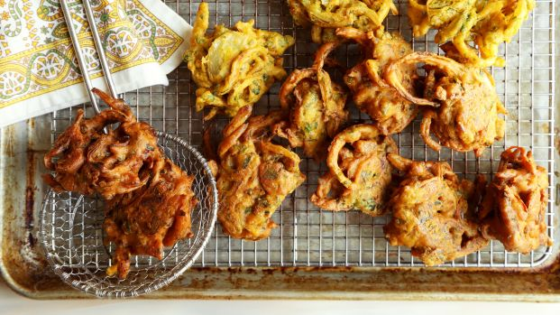

PALAK PANEER
I've made this recipe several times now and I found this to be very true to the best restaurant version I've had. Paneer cubes are super easy to make, but Mexican queso blanco works very well, too.
BAKED POTATO SAMOSA
I really loved these samosas. Very easy. Not spicy, even with the jalapeño it called for, but a great flavor with the spice combo. I ended up having to use pre-formed frozen pie crust, which I defrosted and pulled out of the pie plate. A quick swipe with the rolling pin and it worked perfectly. They were easy to fold up with egg wash on all of the sides.
ONION BHAJI
These fried onion bites are a famous Indian snack, often used as a starter to the main meal. Easy to make and good to eat. An essential part of your curry.